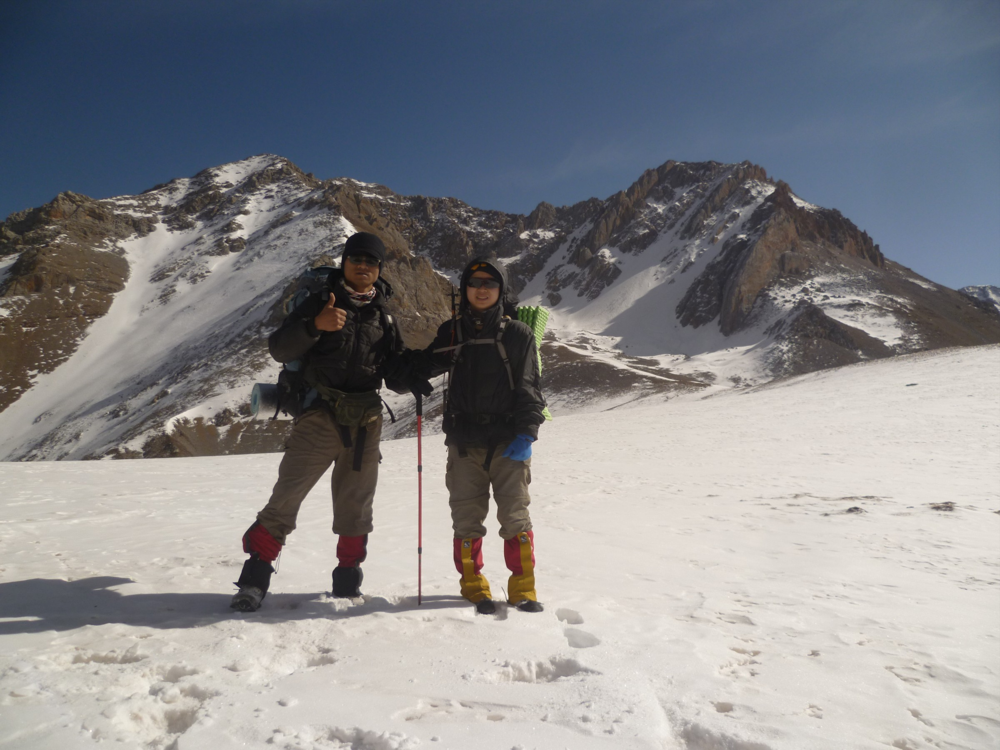
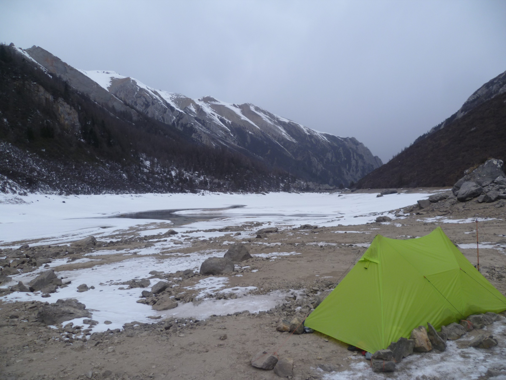
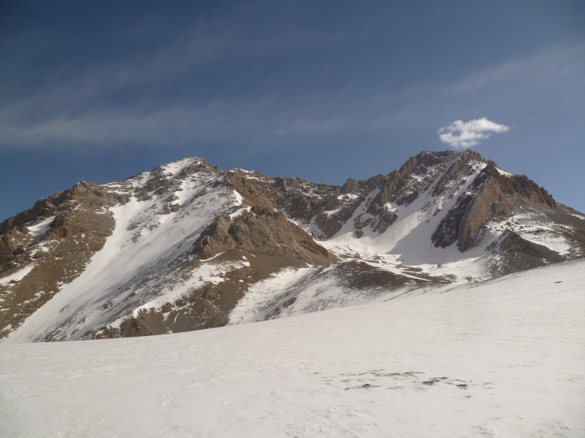

发信人: wayneleaf (大熊家的葉小宝｜喜欢上海的理由), 信区: outdoor
标 题: 【合集】哈哈~回来了
发信站: 饮水思源 (2013年03月05日10:18:18 星期二), 站内信件
☆──────────────────────────────────────☆
hemind (hooft) 于 2013年02月01日21:44:43 星期五)
提到：
 screen.width - 200){this.width = screen.width - 200}">
 screen.width - 200){this.width = screen.width - 200}">
 screen.width - 200){this.width = screen.width - 200}">
☆──────────────────────────────────────☆
RockClimbing (爱攀岩~) 于 2013年02月02日09:10:19 星期六)
提到：
赞啊~
这是什么地方啊？
【 在 hemind 的大作中提到: 】
: http://bbs.sjtu.edu.cn../htm/pics/135972610063700.jpg
: http://bbs.sjtu.edu.cn../htm/pics/135972615563340.jpg
: http://bbs.sjtu.edu.cn../htm/pics/135972623362830.jpg
☆──────────────────────────────────────☆
billyxs (into the wild) 于 2013年02月02日09:26:14 星期六)
提到：
早点回上海攀岩！
【 在 RockClimbing 的大作中提到: 】
: 赞啊~
: 这是什么地方啊？
☆──────────────────────────────────────☆
HYP (孤行) 于 2013年02月02日09:52:36 星期六)
提到：
我类个去！！！什么地方？？
话说那小帐篷不错啊～～什么型号？
【 在 hemind 的大作中提到: 】
: http://bbs.sjtu.edu.cn../htm/pics/135972610063700.jpg
: http://bbs.sjtu.edu.cn../htm/pics/135972615563340.jpg
: http://bbs.sjtu.edu.cn../htm/pics/135972623362830.jpg
☆──────────────────────────────────────☆
liyiren (liyiren) 于 2013年02月02日13:01:43 星期六)
提到：
何敏弟弟你好可爱！这是哪？
【 在 hemind 的大作中提到: 】
: http://bbs.sjtu.edu.cn../htm/pics/135972610063700.jpg
: http://bbs.sjtu.edu.cn../htm/pics/135972615563340.jpg
: http://bbs.sjtu.edu.cn../htm/pics/135972623362830.jpg
☆──────────────────────────────────────☆
icermoon (icer 雨神) 于 2013年02月02日20:57:10 星期六)
提到：
哪啊这是?
【 在 hemind 的大作中提到: 】
: http://bbs.sjtu.edu.cn../htm/pics/135972610063700.jpg
: http://bbs.sjtu.edu.cn../htm/pics/135972615563340.jpg
: http://bbs.sjtu.edu.cn../htm/pics/135972623362830.jpg
☆──────────────────────────────────────☆
hemind (hooft) 于 2013年02月03日12:07:22 星期天)
提到：
哈哈，七藏沟，九寨沟附近，帐篷是A塔。
【 在 HYP 的大作中提到: 】
: 我类个去！！！什么地方？？
: 话说那小帐篷不错啊～～什么型号？
☆──────────────────────────────────────☆
okerryo (次要信息) 于 2013年02月03日12:20:46 星期天)
提到：
不能赞更多！
【 在 hemind 的大作中提到: 】
: http://bbs.sjtu.edu.cn../htm/pics/135972610063700.jpg
: http://bbs.sjtu.edu.cn../htm/pics/135972615563340.jpg
: http://bbs.sjtu.edu.cn../htm/pics/135972623362830.jpg
☆──────────────────────────────────────☆
HYP (孤行) 于 2013年02月03日13:06:47 星期天)
提到：
废话。。。我还不知道是A塔。。。
牌子！型号！！价格！！！使用评测啊！！！！亲！！！！！
【 在 hemind 的大作中提到: 】
: 哈哈，七藏沟，九寨沟附近，帐篷是A塔。
☆──────────────────────────────────────☆
hemind (hooft) 于 2013年02月03日15:41:07 星期天)
提到：
国产3F UL GEAR,就这一个A塔吧。价格就不说了，20D涂硅面料，我没要内帐。单外帐600
多克，两人来说空间足够大了，搭建起来比较方便，登山杖支撑，但是打不下地钉的话就
要想点办法了，我们这次全都是栓石头上。。。。没有内帐要注意防风，我们是用一些装
备和石头挡风，雪地里可以用雪盖住边缘。结露不可避免的。更多测评以后用再说，爪机
伤不起啊。
【 在 HYP 的大作中提到: 】
: 废话。。。我还不知道是A塔。。。
: 牌子！型号！！价格！！！使用评测啊！！！！亲！！！！！
☆──────────────────────────────────────☆
hemind (hooft) 于 2013年02月03日15:45:46 星期天)
提到：
阿坝州九寨那边。
【 在 Rocklimbing 的大作中提到: 】
: 赞啊~
: 这是什么地方啊？
☆──────────────────────────────────────☆
hemind (hooft) 于 2013年02月03日15:49:50 星期天)
提到：
阿坝州九寨沟附近~
【 在 icermoon 的大作中提到: 】
: 哪啊这是?
☆──────────────────────────────────────☆
RockClimbing (爱攀岩~) 于 2013年02月03日16:41:26 星期天)
提到：
你什么时候回家啊？
【 在 billyxs 的大作中提到: 】
: 早点回上海攀岩！
☆──────────────────────────────────────☆
icermoon (icer 雨神) 于 2013年02月03日19:29:04 星期天)
提到：
没有内帐都这么重...
【 在 hemind 的大作中提到: 】
: 国产3F UL GEAR,就这一个A塔吧。价格就不说了，20D涂硅面料，我没要内帐。单外..
: 多克，两人来说空间足够大了，搭建起来比较方便，登山杖支撑，但是打不下地钉的..
: 要想点办法了，我们这次全都是栓石头上。。。。没有内帐要注意防风，我们是用一..
: 备和石头挡风，雪地里可以用雪盖住边缘。结露不可避免的。更多测评以后用再说，..
: 伤不起啊。
|